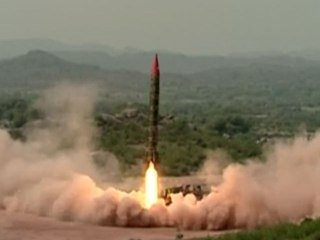

Before reaching the enviable stage of self-propelled guns, automated fire control system, target acquisition radars, meteorological radars, variety of munitions including nuclear warheads and guided missiles, Artillery has come a long way. There was a time when the regiment was organized in a garrison and field artillery for laying sieges and defending fortresses. Later came a new organization based on the degree and means of mobility i.e the garrison, horse and field artillery. The first being fixed and last two being mounted. Still later, followed a newer organization based on the caliber of guns and size of shells i.e. light, medium, heavy and super heavy. Pack or mountain, horse and field artillery falling in the category of light artillery and huge caliber coastal guns falling under the super heavy category. Today, we have bifurcated into mountain, field, medium, heavy and mortars. This division is based on a combination of factors like mobility, caliber, range, trajectory and size of shells etc.
The roots of Royal Artillery and Pakistan Artillery link to the evaluation of Royal Artillery to Royal Indian Artillery and then to Royal Pakistan Artillery, until it became the Regiment of Artillery as today. In the British India, prior to 1861, requirement of artillery was met by the presidency artillery. The year 1861 saw conversion of presidency artillery into Royal Artillery which kept on serving the British Indian Army till 1 November 1940, when the foundation of the Indian Artillery was laid. Later, after the end of World War II in August 1945, the Indian Artillery was re-designated as the Royal Indian Artillery. After the independence in 1947, the Pakistani complement of the Royal Indian Artillery was converted into Royal Pakistan Artillery. Finally on assumption of national constitution on 23 March 1956, It was decided to re-designate it as the Regiment of Artillery. Pakistan Artillery inherited only eight gun units, one survey battery, an air observation post flight and two formation headquarters. In addition to this, the Frontier Corps had six 3.7 inch howitzers and fifteen 25 pounder guns. The units inherited were built around a steel frame of old mountain gunners. These men had tempered through years of service in frontier operations and honed in the battlefields of Africa, Middle East, Italy and Burma. Their reaction to the battle was unexcited, instinctive and professional. It was with these men that regiments were raised and built a formidable arsenal for the Nation in the form of Pakistan Artillery.
In 1948 Kashmir War, when the Regiment of Artillery was still nascent, it got committed against numerically superior forces. Pakistan Artillery operated in Kashmir under several handicaps except for the spirit and skill of our officers and men. Guns were employed with great care and full calculation of the risks involved. In spite of Indian monopoly of air, wherever our guns opened fire, the Indians were surprised and silenced receiving commensurate punishment. The feats like manhandling and taking the guns to heights of over 9000 feet on the peaks of Chunj, Kai and other features and engaging Indian forces will remain a glowing chapter in the history of Pakistan Artillery. These officers and men were trained before the dawn of independence but they were Pakistanis and so was their spirit and inspiration. For the first time since the disintegration of Mughal Empire, the people of this part of the land could feel making their own history.
By 1965 the Regiment of Artillery was eighteen years old but was well past its adolescence. The events of 1947-48 had lifted us out of our infancy into an awareness of responsibility. Indo Pak War of 1965 was the first real test of our forces. Artillery came out with flying colours and earned well deserved appreciation both from friends and foes. In all the sectors starting from Kashmir in the North to Rann of Kutch in the South, Artillery played predominant and decisive role. Timely and accurate fires and capability of Artillery units to deploy and redeploy in adverse battle conditions had devastating effect on the Indian forces. The overall war performance of Artillery can be easily gauged through the tributes paid to the gunners. In April 1948, Quaid-e-Azam Mohammad Ali Jinnah visited this establishment and addressed a Durbar which is an honour for the Armoured Corps. In April 1948, the first attestation parade was held for the first batch of recruits to pass out and since then a steady flow has been maintained.
By all accounts the part played by Artillery can only be termed as MAGNIFICENT. The results achieved are MIRACULOUS.
They deserve congratulation and gratitude of us all.
FIELD MARSHAL MOHAMMAD AYUB KHAN
I am proud of the part played by our Artillery in the crucial battle in Sialkot. The superb performance of our Artillery is
admitted even by the enemy. It shook her nerves. GENERAL MOHAMMAD MUSA
Artillery has given a good account of itself in the war and has without any doubt emerged as the best fighting arm of the
Pakistan Army. LIEUTENANT GENERAL AKHTAR HUSSAIN MALIK
The enemy used his Artillery boldly and effectively. In the early stage, specially in XI Corps sector, it produced devastating
results. The enemy used his Mortars aggressively and in a mobile role. Mortars were moved out at night well forward of his
position onto our flanks from where they could engage targets in depth, some times even our gun positions. COMMENTS BY INDIANS
The obvious problems resulting from this vast expansion were thinning out, dispersion of experience, lack of balance between field, medium and heavy units and problems emanating from induction of Eastern equipment. Besides, there were training handicaps due to the financial limitations imposed by large raisings in the Army. Keeping these serious constraints in view, the performance of Artillery in 1971 War was truly great and outstanding from any measures. Brief account of war performance is as under:-
In East Pakistan (Now Bangladesh), Artillery units had to operate in the adverse conditions of hostile activities and unfavorable terrain. Move of guns in various sectors was itself not a small task. However, the gunners, true to their traditions and training, provided extremely effective fire support to the supported arm, at the same time defending their guns. All this was accomplished under the condition of complete enemy air superiority. On performance of gunners in East Pakistan, Lieutenant General Lachman Singh Lal, General Officer Commanding 20 (Indian) Mountain Division, a gunner himself paid tribute to Pakistan Artillery:-
Performance of Pakistan Artillery in Bangladesh operations was extremely well and commendable.
LIEUTENANT GENERAL LACHMAN SINGH LAL
In West Pakistan the performance of Artillery and effectiveness of fire support was equally outstanding. Employment of guns and concentration of firepower played havoc with enemy forces. In some sectors the battles fought were very intense and fierce but Artillery invariably remained a deciding factor. Whenever the call for fire was made, it was promptly and instantaneously answered. The following extract from Military Analysis of 1971 war by Lieutenant General Azmat Bakhsh Awan is a gist and true reflection of gunners performance in 1971 war.
Quote
Artillery was employed in a bold manner and very effectively, particularly in support of Chhamb and Ponch operations. Artillery has faithfully responded to the call of duty whenever required.
LIEUTENANT GENERAL AZMAT BAKHSH AWAN
Its main function in battle is the establishment of such fire supremacy in the battle area that the enemy can neither interfere with our operations nor can he develop his own effectively. Artillery fulfils this function by destroying or neutralizing enemy ground or air weapons by causing casualties to his troops and ultimately by breaking his will to fight. Artillery has therefore, the following Tactical functions:-